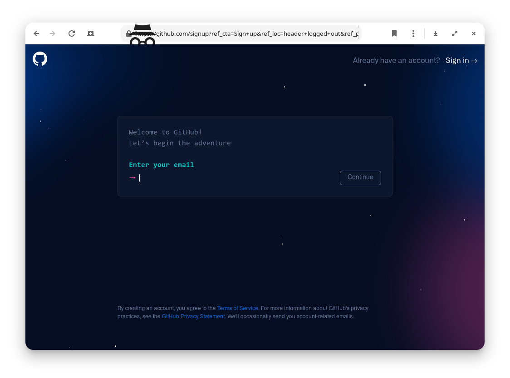
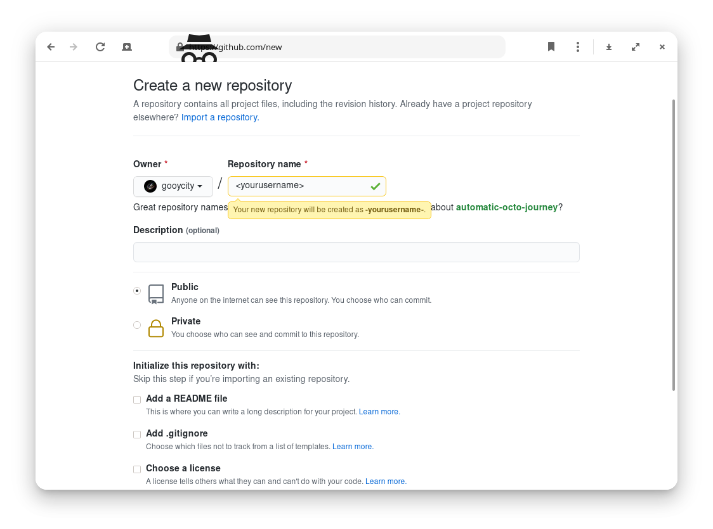

Make a blog site by using GitHub pages and Jekll
念头一起，就无法消失了，除了去做。
引言
这已经不是我第一次搭建博客了。
去年疫情搭建梯子时，根据网上的教程，用租用的 VPS 和腾讯新人购买的域名搭建过一个博客网站。因为时间久远，甚至连采用的什么框架都忘了。
后来因为用的机场恢复运营了，VPS 和域名的作用消失了，建站也就不了了之了。前两天域名到期提示续费的邮件让我想起“哦，我还玩过这个啊”。
最近在用 Psychtoolbox 编实验程序，想找一个地方存放自己编写程序的过程，发现拥有一个博客最能满足需求。一是记录自己在做的事情，二是借此展示自己，看有无朋友愿意请我帮忙编写心理学实验程序。
基于上述内容，于2021年7月30日，利用一天的时间，通过 Google 和查阅官方文档的方式，搭建了这个博客。本文讲述了两种方法。大家可以选择性的跳到自己需要板换阅读。
材料和方法
材料
- Arch Linux
- GitHub，本博客基于 GitHub Pages 和 Jekyll 所搭建。
- Jekyll
- Vim
- Atom
准备：git、GitHub 帐号
整个搭建过程完全在Arch Linux 系统上完成。
archie@arch ~ (master)> neofetch
-` archie@arch
.o+` -----------
`ooo/ OS: Arch Linux x86_64
`+oooo: Host: TM1701
`+oooooo: Kernel: 5.13.6-arch1-1
-+oooooo+: Uptime: 4 hours, 51 mins
`/:-:++oooo+: Packages: 1302 (pacman)
`/++++/+++++++: Shell: fish 3.3.1
`/++++++++++++++: Resolution: 1920x1080
`/+++ooooooooooooo/` DE: GNOME 40.3
./ooosssso++osssssso+` WM: Mutter
.oossssso-````/ossssss+` WM Theme: Layan-light
-osssssso. :ssssssso. Theme: Layan-light [GTK2/3]
:osssssss/ osssso+++. Icons: ePapirus [GTK2/3]
/ossssssss/ +ssssooo/- Terminal: gnome-terminal
`/ossssso+/:- -:/+osssso+- CPU: Intel i7-8550U (8) @ 4.000GHz
`+sso+:-` `.-/+oso: GPU: Intel UHD Graphics 620
`++:. `-/+/ GPU: NVIDIA GeForce MX150
.` `/ Memory: 2952MiB / 7837MiB首先安装 git ，终端输入：
sudo pacman -S git然后要有一个 GitHub 帐号

创建一个 GitHub 仓库（Repository），根据官方文档，仓库名称必须为 <user>.github.io 。实际测试发现，如果不是也可以，只不过博客网址要在仓库名前加上 <user>.github.io 。当然，可以但没必要。

我们新建的仓库是空的，GitHub 也给出了提示，上我们上传或者新建一个 README.md ，我在这里选择了跳过。因为后面会上传更多的东西。
方法一： Clone 主题仓库来部署网站
完成上面的部分后，下面的工作命令在终端上执行。
- 转到准备好的项目存储位置（一个本地文件夹），我这里给其命名为
GitHub。
cd GitHub- 然后在 GitHub 找一个合适的主题，然后把它的库文件都下下来。删掉 .git 文件。然后把文件夹的名字修改为自己的远程库名字。
#拷贝文件
git clone 所选主题库的地址
mv <主题文件夹> <user>.github.io # 移动文件、复制和修改文件名称是同一个命令
cd <user>.github.io/
rm -rf .git- 初始化本地 Git 仓库，我因为同时参考多个教程，错过了这个步骤，导致一直报错
fatal: not a git repository (or any of the parent directories): .git。后来才发现，是没有初始化本地仓库的原因。
git init .- 将刚刚创建的站点文件夹链接到远程仓库。
git remote add origin http://github.com/<user>/<user>.github.io.git- 这时一切都准备好了。我们只需要把库里所有的文件上传到我们刚刚建的 GitHub 仓库里， GitHub Pages 就会自动部署一个网站。
git add .
git commit -m “注释，可以填上你自己想写的任何内容”
git push -u origin main至此我们就成功搭建好了博客。可以打开看看了。https://gooycity.github.io 。当然，目前这个博客只是刚建好的状态，就象刚封顶的大楼一样，甚至还有很多搭建时的脚手架需要移除。我们下一步的工作就是发挥自己的创意和审美，来完善它了。
方法二：使用 jekyll 搭建
- 安装 jekyll。
jekyll 是基于 Ruby 开发的，需要首先在电脑上安装 Ruby 环境
sudo pacman -S ruby然后通过 gem 命令，安装 jekyll
gem install jekyll我在这里踩了一个坑。执行命令后，出现报错信息，安装成功，但是使用时找不到 jekyll命令。
archie@arch ~ (master)> gem install jekyll
WARNING: You don't have /home/user/.local/share/gem/ruby/3.0.0/bin in your PATH,
gem executables will not run.
Successfully installed jekyll-4.2.0
Parsing documentation for jekyll-4.2.0
Done installing documentation for jekyll after 0 seconds
1 gem installed如果出现这个报警信息，把提示的途径加入到环境信息中即可。通过这种方式设置，每次重启后都重置。在使用 jekyll 前需要首先执行这个命令。
export /home/user/.local/share/gem/ruby/3.0.0/bin # 根据提示信息而变永久解决的办法是，在 /etc/profile（所有 shell 有效） 或 /etc/bash.bashrc/（仅 bash 类有效）中添加上边的命令。
对于 fish 用户，可以执行如下命令来进行添加。
# echo 添加文本到文件
# fish_add_path 添加路径到 fish 设置
sudo echo "fish_add_path /home/user/.local/share/gem/ruby/3.0.0/bin" > ~/.config/fish/config.fish- jekyll 命令新建博客站点
在本地库的存储目录（网站仓库的父目录）里执行 jekyll 创建新网站命令即可。如果不指定主题，该命令会是用默认的 minial 主题创建。
jekyll new <user>.github.io --force # `<user>.github.io`本地仓库名； force 为强制创建标识符- 本地预览站点
建了一个干干净净的博客，切换到库目录，然后搭建本地预览服务。
cd <user>.github.io/
bundle exec jekyll serve根据终端输出的信息，在浏览器中输入地址，进行本地预览。
- 部署站点到 GitHub Pages
此时我们就创建好了一个新网站。最后一个步骤就是将网站部署到 GitHub Pages 上。
cd <user>.github.io # 切换到站点的仓库目录。
git init 初始化本地仓库
git remote add origin http://github.com/<user>/<user>.github.io.git
git add .
git commit -m "注释"
git branch -M main
git push -U origin main事后
为了更方面的维护网站，这里推荐 GitHub 出品的开源编辑器 Atom。整合了 Git 管理工具。再加上插件，是一个很棒的 Markdown 编辑器。用起来相当舒服。
sudo pacman -S atom在工作区打开本地库文件夹，会自然登录 GitHub。
- 修改站点信息
编辑 config.yaml 文件。
- 添加新博文
在 _posts 文件夹中新建 markdown 文件。并配置相应的 YAML 头信息。
这些设置也可以通过 Atom + markdown writer 插件图形化实现。我会写一篇文章详细描述怎么配置一个可用的 Atom 编辑器。
To be continued.